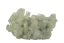
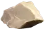
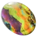

Correspondence Grimoire
 Crown Chakra
Crown Chakra

Goshenite
NovaculiteOkenitePetalite
SpectroliteSpinelSpirit QuartzA chakra is an energy node in the human body. In Sanskrit this one is called Sahasrara, and it is pictured as the thousand-petaled lotus, which sits above the head and outside the physical body.
Colors
White
Attributes
Spiritual Union With the Divine/Universe
Governs
Faith, spirituality, and trust
Chant sound: EE (like the e in bee)
Location: Situated at the top of your head
For yoga, specifically headstands for the best exercise for this chakra.
Affirmations for this chakra:
- I Release all my thoughts and actions that limit my Self-Awareness
- I acknowledge that I have unlimited Potential and that I have access to all Magickal Knowledge
- Without any need to Change, I am who I am, unique and perfect.
Chakra Healing
The crown chakra is our connection with the divine. The root chakra connects us with earth, while the crown chakra gives us a link to heaven. Also, as the root chakra is connected with the mother, the crown chakra is related to the father. Someone who is separated from their father is likely to experience a sense of isolation. This also makes it hard for the person to establish a connection with God.
Physical Areas: The crown chakra is concerned with the pineal gland, the brain, and the nervous system. It is also related to coordination and a sense of direction.
Imbalance Issues: When the crown chakra is out of balance you are likely to avoid responsibility, and feel lonely and isolated, even with other people around you.
Stimulation: The crown chakra can be stimulated by meditation, and by setting worthwhile goals. Any activities relating to your faith or philosophy of life will also stimulate your crown chakra.
Body Systems
The crown chakra governs the following body systems and organs:
- Skeletal system
- Skin
- Muscular system